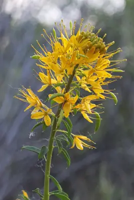

pranet · 出典付きの植物図鑑
Cleome lutea
Cleomella lutea (Hook.) Roalson & J.C.Hall · Cleomaceae

Cleomella lutea is a species of flowering plant known by the common names yellow bee plant and yellow spiderflower. This annual wildflower is native to the western United States where it is most common in desert scrub and plateau habitats. It is a sprawling plant often exceeding 1 metre in height. The erect stem can be branched and has widely spaced leaves all the way along, each leaf made up of three to five leaflets, which are smaller closer to the top of the plant. Atop the stem is a showy inflorescence of many bright yellow flowers. Each flower has four narrow sepals and four oblong petals around a cluster of six long stamens tipped with knobby anthers. As the inflorescence lengthens at the top of the stem, flowers that have opened and been pollinated drop their petals and the ovary develops into a fruit. The fruits are capsules several centimeters long containing large seeds; these develop at the base of the inflorescence and hang on pedicels. A flowering plant may have blooming flowers at the top of the stem and ripening capsules dangling off the stem further down.
出典: Wikipedia (en): Cleomella lutea · CC BY-SA 4.0
異名: Cleome aurea (Nutt.) Nutt., Cleome breviflora (Wooton & Standl.) Pax & K.Hoffm., Cleome lutea Hook., Isexina aurea (Nutt.) Raf., Peritoma aurea Nutt., Peritoma breviflora Wooton & Standl., Peritoma lutea (Hook.) Raf.
同定や利用は自己責任でお願いします。この図鑑だけを根拠に野生の植物を食べないでください。
出典
- 学名: World Flora Online Plant List 2026-06 · CC0 1.0
- 名前: Wikipedia の記事名と Wikidata · CC0 1.0（Wikidata）。記事名は事実
- 説明: Wikipedia (en): Cleomella lutea · CC BY-SA 4.0
- 食用・毒性: World Checklist of Useful Plant Species (Diazgranados et al. 2020, RBG Kew) · CC BY 4.0
- 分布: World Checklist of Vascular Plants (WCVP), RBG Kew, version 2026-06-04 · CC BY 3.0
このページは pranet のデータから自動生成しています。コードは MIT、データは項目ごとのライセンス（説明）。